Featured project
EEGProc
A lightweight Python library for EEG processing, deep learning, and model explanations. Follow a recording from raw signal to an explained prediction, one scroll at a time.
pip install eegproc
Advancing Research in Wearable Brain-Computer Interfaces (BCI) and Machine Learning (ML)
EEGo Lab on GitHub ↗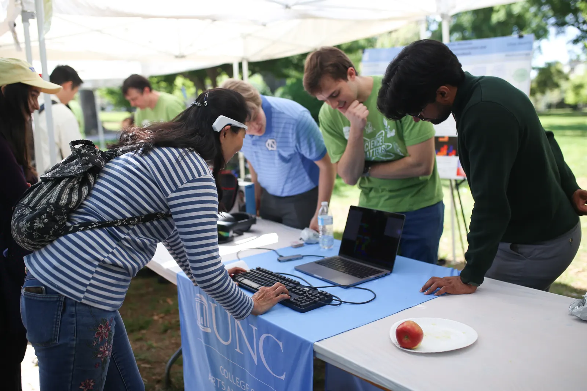
“BCI is the future, but there is still so much to understand about the brain and how to connect it to software.”
EEGo Lab is a student-led research group that spans the University of North Carolina at Chapel Hill and Columbia University exploring wearable EEG, brain-computer interfaces, and machine learning for neuroadaptive applications.
Our work focuses on using real-time brain signals to study cognitive and emotional states, improve user experimentation, and build adaptive systems for education, VR, and interactive software.
Supported by the UNC Graduate Fund, UNC Honors Undergraduate Fund, and Emotiv Inc.
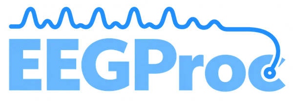
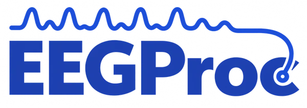
Featured project
A lightweight Python library for EEG processing, deep learning, and model explanations. Follow a recording from raw signal to an explained prediction, one scroll at a time.
pip install eegproc
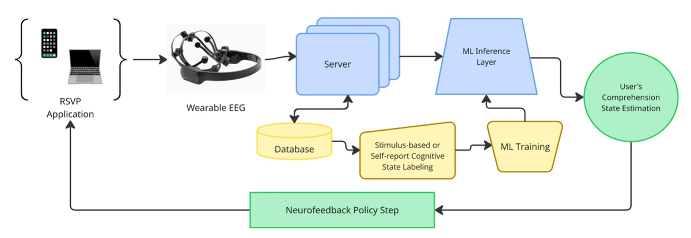
Featured research
Forthcoming in the IEEE SMC 2026 conference proceedings on IEEE Xplore.
Conference and workshop: 2026 IEEE International Conference on Systems, Man, and Cybernetics · 16th IEEE SMC Workshop on Brain-Machine Interface (BMI) Systems
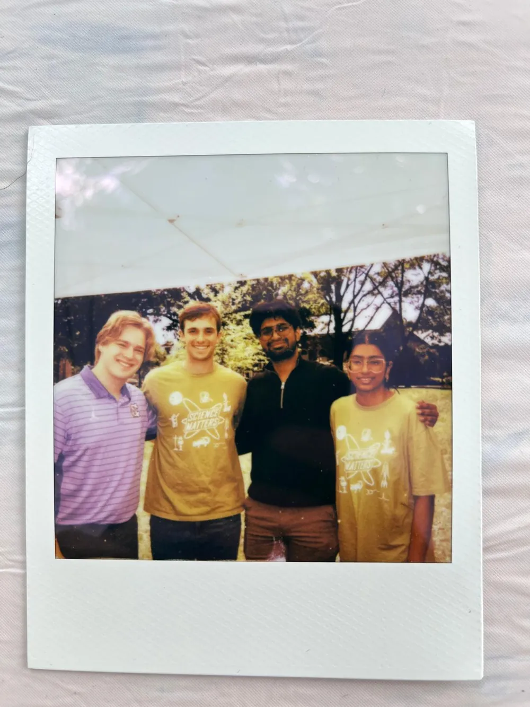
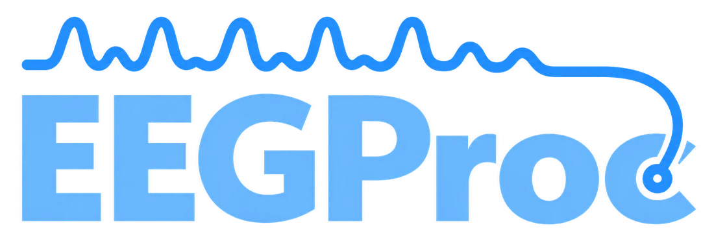
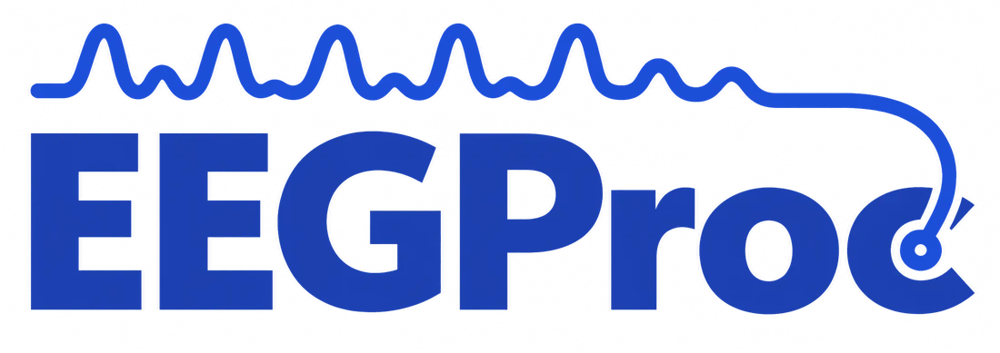
A lightweight Python library for EEG processing, deep learning, and model explanations.
EEGProc cleans EEG recordings, turns them into features, trains and evaluates models one held-out subject at a time, and shows which electrodes and frequency bands a prediction depends on. It aims to be easy for AI coding assistants and non-technical researchers to use, while keeping the control that EEG deep learning work needs.
Models, cross-validation and counterfactuals need the extra:
pip install "eegproc[deep-learning]"
Figure 1 follows fourteen channels of synthetic EEG through the five stages EEGProc covers. Scroll to step through it. Each panel names the function that does the work.
A synthetic recording of 14 channels at 128 Hz, laid out like DREAMER (AF3 to AF4), with line noise, slow drift and eye blinks. EEGProc expects a table with one column per electrode, such as the CSV that eegproc-to-csv writes.
bandpass_filter re-references the channels, removes line noise with a notch filter, detrends, and splits each channel into frequency bands. The figure shows theta, alpha and beta; FREQUENCY_BANDS defines six bands from delta to gamma.
psd_bandpowers computes Welch band power in 4-second windows that overlap by half, one table row per window. shannons_entropy then summarizes how evenly each channel's power is spread across the bands.
cross_validate_dataframe groups feature rows into short sequences for a BiLSTMClassifier, which reads them in both directions. With strategy="fixed_loso" every subject is held out once, and the per-subject scores end up in results["user_metrics"]. The score bars are illustrative.
ModelAgnosticCounterfactualOptimizer changes a held-out input, not the model's weights, until the prediction flips. The scalp map shows how much each electrode changed in the alpha band. Values are illustrative.
Developers and researchers use EEGProc to estimate affective state, described by valence and arousal, and cognitive state: attention, cognitive load and engagement. Your labeled recordings, your model and your evaluation protocol define the actual prediction task.
Select a quadrant to read where it sits.
Is the person focused on the task?
How much mental effort does the task demand?
How involved does the person stay over time?
A typical project records EEG with a wearable headset while someone does a task, pairs the recordings with labels such as self-reports or task scores, and trains a model on a server. The model's state estimates then feed back into the application. EEGProc covers preprocessing, features, model building, evaluation and explanations. The recording device, data storage and the application loop are up to your project.
The base install covers preprocessing, features, dataset conversion and plotting. Models, cross-validation and counterfactual explanations need the deep-learning extra, which adds TensorFlow and scikit-learn.
Bandpass filtering, detrending, spectral band power, Hjorth parameters (activity, mobility and complexity), and Shannon, wavelet and IMF (empirical mode decomposition) entropy. The functions work on pandas DataFrames.
from eegproc import bandpass_filter, hjorth_params, FREQUENCY_BANDS
clean = bandpass_filter(raw, fs, bands=FREQUENCY_BANDS) # AF3_delta ... AF4_gamma
hjorth = hjorth_params(clean, fs) # AF3_alpha_activity, _mobility, _complexityeegproc-to-csv converts downloaded DREAMER, AMIGOS, EEGEmotions-27 and DEAP recordings, and the Cowen/Keltner emotion ratings, into CSV or gzipped CSV.
pip install eegproc
eegproc-to-csv --dataset dreamer --input DREAMER.mat --output dreamer.csv.gzReusable CNN1D, CNN2D and graph-convolution encoders (including a multi-task GCN), RNN classifiers such as a BiLSTM, dense and variational classifier heads, VAE and supervised-contrastive losses, domain-generalization helpers for meta-learning and alternating group learning, and subject-wise cross-validation.
from eegproc.deep_learning.supervised.rnn_architectures import BiLSTMClassifier
# 4 feature rows per input, 42 features (14 channels x 3 bands), 2 classes
model = BiLSTMClassifier(timesteps=4, n_features=42, n_classes=2).build()Counterfactual optimization for any differentiable TensorFlow model, connected through a small adapter, with plots and scalp topographies of what changed.
from eegproc.model_explainability.model_agnostic import (
KerasInputAdapter, ModelAgnosticCounterfactualOptimizer,
)
adapter = KerasInputAdapter(model, output_kind="logits")
optimizer = ModelAgnosticCounterfactualOptimizer(adapter, target_probability=0.8)
result = optimizer.optimize(trial[None, ...], target_class=1)Each featurizer reads the output of the step before it. The band-energy functions start from the raw or filtered signal, and each entropy function reads the matching energy table. Choose a function in Table 1 to see its input and output.
| Function | Consumes | Emits |
|---|---|---|
| raw signal | {channel}_{band} | |
| filtered signal | {channel}_{band} | |
| PSD table | {channel}_entropy | |
| filtered signal | {channel}_{band}_activity, _mobility, _complexity | |
| raw signal | {channel}_{band}_wenergy | |
| wavelet energy | {channel}_wentropy | |
| raw signal | {channel}_{band}_imfenergy | |
| IMF energy | {channel}_imfentropy |
AF3_alpha.eegproc-to-csv reads the files you download from each provider and writes CSV or gzipped CSV. It reads large files in chunks, checks the input layout, and keeps subject and trial boundaries. The output has one row per EEG sample with subject_id, trial_id, segment, sample_idx, one column per channel, and the dataset's labels.
DREAMER.matData_Preprocessed_P*.mateeg_raw/*.txts*.datSources: DREAMER on Zenodo, AMIGOS dataset page at QMUL, EEGEmotions-27 repository on GitHub, DEAP dataset page at QMUL, Cowen/Keltner feature archive on Figshare. The EEGProc dataset guide lists the supported file layouts.
EEG varies a lot between people. If windows from one person end up in both the training set and the test set, a model can learn to recognize the person rather than the state, and its scores will not hold for someone new. EEGProc's cross-validation holds out whole subjects, and its windowing never builds a window across two trials.
on_short_trial="skip".cross_validate_dataframe supports four strategies: "loso" (leave one subject out), "fixed_loso" (the same with fixed settings), "nested_lnso" (nested leave-N-subjects-out tuning) and "subject_calibration" (calibration and few-shot).
A counterfactual answers a specific question: what is the smallest change to this input that would change the model's prediction? EEGProc optimizes the input, or a latent state through an adapter, for any differentiable TensorFlow model. The model's weights stay fixed.
Figure 6. (a) A held-out input moves in small gradient steps across the decision boundary until the prediction changes from low to high valence. (b) The electrode and band features that changed most. (c) Scalp maps of the change for theta, alpha and beta, with amplitude difference in the top row and RMS difference in the bottom row. All values are illustrative.
Optimization does not always succeed, so check the result's summary before you interpret a counterfactual. To plot topographies from a saved archive:
python -m eegproc.model_explainability.model_agnostic.topography \
/path/to/counterfactual.npz --branch input --no-showEEGProc 1.0.0 shipped two modules, preprocessing and featurization. Version 2.0.0 adds a deep learning package and splits the library into six modules: the original two, plus data, plotting, deep_learning and model_explainability.
preprocessingfeaturizationBase install, pip install eegproc
preprocessingfeaturizationdatatable schema, trial-safe windowing, eegproc-to-csvplottingplots that return figuresWith the extra, pip install "eegproc[deep-learning]"
deep_learningmodels, training and cross-validation
supervisedRNN classifiers, variational heads, contrastive lossunsupervisedCNN and graph encoders and decoders, VAE losscross_validationleave-one-subject-out, nested, calibrationdomain_generalizationalternating group learning, meta-learningmodel_explainabilitycounterfactuals for Keras modelsdata and plotting join the base install, and deep_learning and model_explainability install with the deep-learning extra.deep_learning is new. supervised has RNN classifier builders, dense and variational classifier heads, and a supervised contrastive loss. unsupervised has CNN and graph-convolution (GCN, GraphConv) encoders and decoders with a variational autoencoder loss. domain_generalization adds alternating group learning and meta-learning.
deep_learning.cross_validation runs leave-one-subject-out, nested and calibration cross-validation, with splits, metrics, aggregation and reporting, on top of a windowing layer that keeps windows inside trials.
model_explainability.model_agnostic optimizes counterfactuals for any Keras model through an input adapter, plots them as scalp topographies, and has a command-line runner.
preprocessing, featurization, data and plotting come with the base install. deep_learning and model_explainability need the deep-learning extra, which adds TensorFlow and scikit-learn. The base install no longer pulls in scikit-learn, joblib or dill.
data holds the table schema, trial-safe windowing and the eegproc-to-csv converter for AMIGOS, DREAMER, EEGEmotions-27 and DEAP, with chunked reads, gzip output and input validation.
EEGEmotions-27 label ordering, a double softmax, the default metrics in loso_cv and the VAE loss on sequence latents are fixed. A new version on main now publishes to PyPI and redeploys the docs automatically.
# shannons_entropy now takes the PSD table and returns one value per channel
- entropy = shannons_entropy(clean, fs, FREQUENCY_BANDS, window_sec=4.0, overlap=0.5)
+ entropy = shannons_entropy(psd_bandpowers(clean, fs, bands=FREQUENCY_BANDS))
# detrend_df was removed
- detrended = detrend_df(df, "linear")
+ detrended = apply_detrend("linear", df)Python 3.10 or newer is now required. The full changelog is on GitHub.
The base install includes preprocessing, featurization, data and plotting. deep_learning and model_explainability need the extra. Each module name links to its API reference.
These snippets use the current API. For a complete run, see the DREAMER example script: preprocessing, PSD features, a BiLSTM, leave-one-subject-out cross-validation and a counterfactual for a held-out input, on DREAMER (23 subjects, 14 EEG channels at 128 Hz, 18 trials per subject).
Base install: pip install eegproc
import pandas as pd
from eegproc import bandpass_filter, psd_bandpowers, shannons_entropy, FREQUENCY_BANDS
raw = pd.read_csv("my_eeg.csv") # one column per electrode
fs = 128
clean = bandpass_filter(raw, fs, bands=FREQUENCY_BANDS) # -> AF3_alpha, AF3_theta, ...
psd = psd_bandpowers(clean, fs, bands=FREQUENCY_BANDS) # one row per window
entropy = shannons_entropy(psd) # -> AF3_entropy, F7_entropyThen plot the band powers over time:
from eegproc.plotting import plot_eeg_features
fig, axes = plot_eeg_features(
psd, title="EEG band powers", channels=["AF3", "F7"],
frequency_bands=["theta", "alpha"], seconds=4, overlap=0.5,
)Needs the extra: pip install "eegproc[deep-learning]". The CSV holds subject, trial, a binary label, and EEG features in time order.
import pandas as pd
from eegproc.deep_learning.supervised.rnn_architectures import BiLSTMClassifier
from eegproc.deep_learning.cross_validation import cross_validate_dataframe
features = pd.read_csv("features.csv")
def build_model(training_features):
# Build a fresh BiLSTM using this fold's input dimensions.
return BiLSTMClassifier(
*training_features.shape[1:], n_classes=2, lstm_units=16, n_bilstm_layers=1,
).build()
results = cross_validate_dataframe(
features, build_model, strategy="fixed_loso", fs=128,
feature_columns=("AF3_alpha", "F7_alpha"), # Choose your EEG features only.
window_rows=4, normalize="subject_zscore",
fixed_config={}, n_epochs=10, batch_size=32,
)
# per-subject scores: results["user_metrics"]subject_zscore uses each subject's own unlabeled data, including the held-out subject's. Leave it out if that offline normalization assumption does not fit your evaluation.
Needs the extra. model is a loaded Keras model and trial is one input without its batch axis.
from eegproc.model_explainability.model_agnostic import (
KerasInputAdapter, ModelAgnosticCounterfactualOptimizer,
)
adapter = KerasInputAdapter(model, output_kind="logits")
optimizer = ModelAgnosticCounterfactualOptimizer(adapter, target_probability=0.8)
result = optimizer.optimize(trial[None, ...], target_class=1)The result holds summary, history and arrays. Save the arrays with your channel metadata, then draw topographies:
python -m eegproc.model_explainability.model_agnostic.topography \
/path/to/counterfactual.npz --branch input --no-showEEGProc is built at EEGo Lab. Its contributors are Vitor G. Inserra (@VitorInserra), Amit Chalmeti (@Amit_Chalmeti), Pranav Mucharla (@Pranav1006), Sai Nagamalla (@sainag7) and Yashasree Gadipalli (@ygadipalli). The People page lists the whole lab.
New model architectures, machine-learning techniques and visualization modules are welcome. Before you open a pull request, read the contributing guide: keep the documentation examples runnable and describe any API change. Questions and bug reports go to the issue tracker.
If EEGProc helps your research, please cite it. This entry comes from CITATION.cff:
@software{eegproc,
author = {Inserra, Vitor},
title = {{EEGProc}: {EEG} preprocessing, featurization and subject-wise cross-validation},
version = {2.0.0},
license = {GPL-2.0},
url = {https://github.com/EEGo-UNC/EEGProc}
}Open-source Python library
Researchers can use EEGProc to build deep-learning pipelines from EEG feature extraction through model building, evaluation, and explainability, with data visualization at every step.
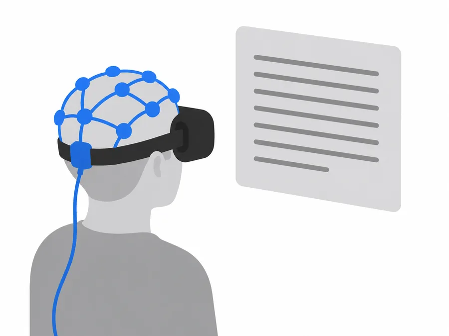
Forthcoming project
Could humans read faster and better using EEG BCI?
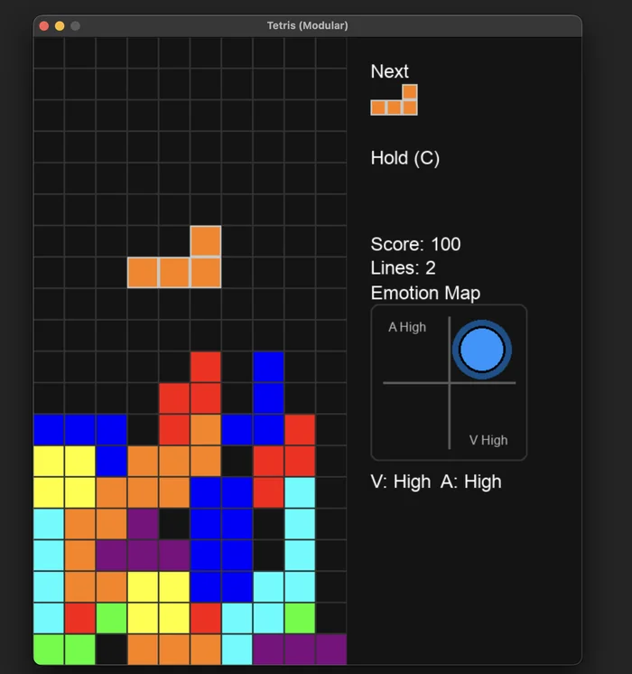
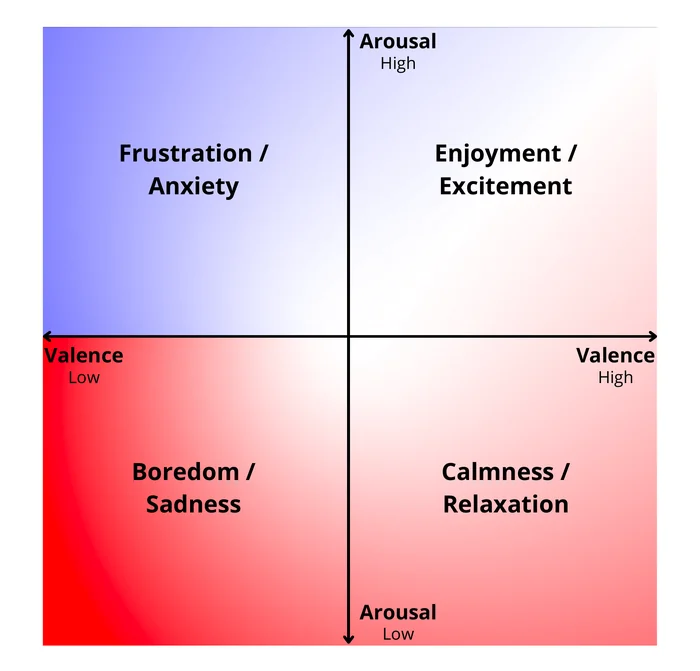
Neuroadaptive game
Neuroadaptive games reimagined. A new paradigm that transforms deep learning cognitive states into a systems dynamics control-loop. The original version uses an Emotiv EPOC X EEG headset.
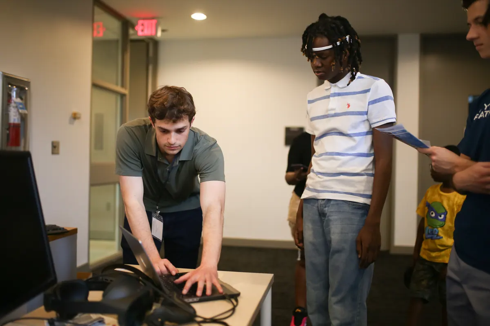
Muse EEG adaptation
Muse Tetris adapts Neuroadaptive Tetris for use with a Muse EEG headset, bringing the brain-responsive game to a wearable setup.
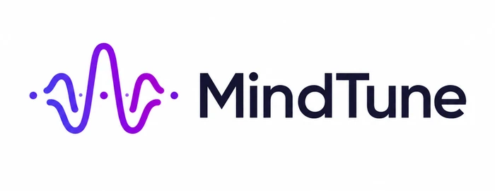
Interactive EEG game
Mind Tune is a small video game where you help a model fine-tune to your emotions. Anyone with an Emotiv EPOC X can try it, and we invite people to contribute to the project.
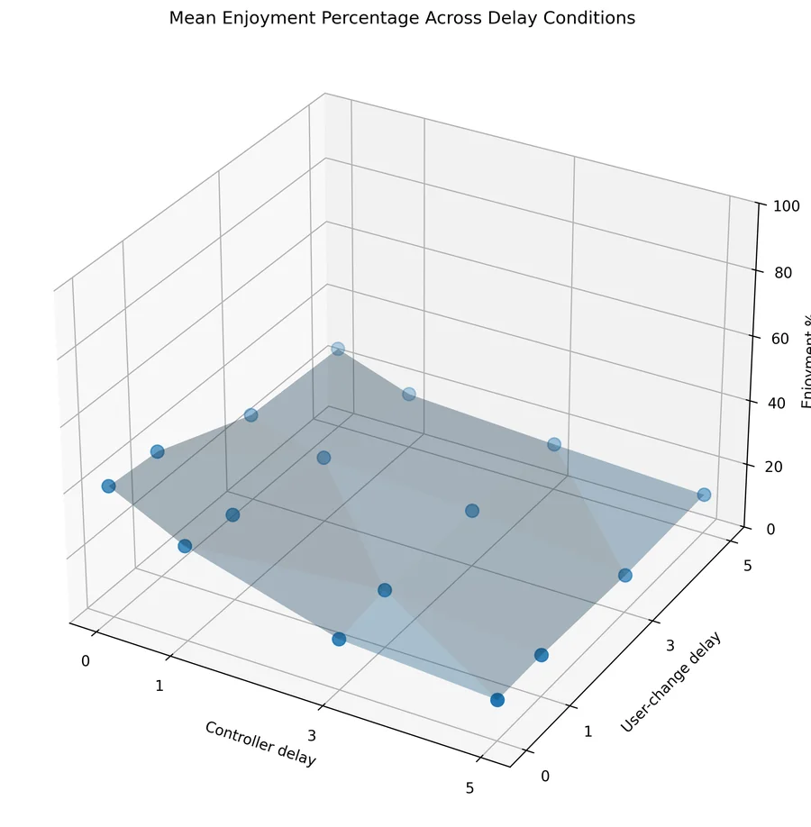
Digital-twin simulation framework
BaaS is intended as a framework for digital-twin simulations of Neuroadaptive Tetris. It will run multiple simulations with different neuroadaptive controllers so researchers can compare their effects.
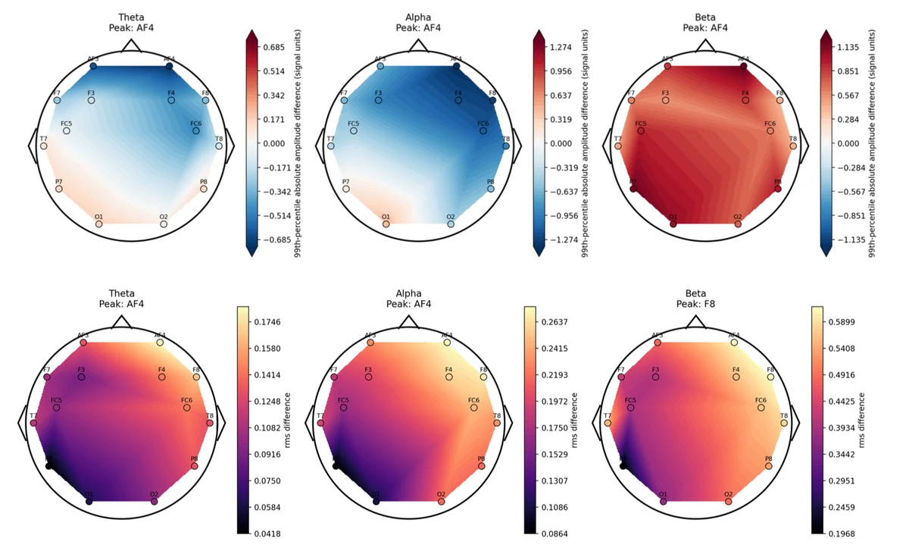
Research paper
Forthcoming
IEEE SMC 2026 · BMI Workshop
Forthcoming in the IEEE SMC 2026 conference proceedings on IEEE Xplore.
Conference and workshop: 2026 IEEE International Conference on Systems, Man, and Cybernetics · 16th IEEE SMC Workshop on Brain-Machine Interface (BMI) Systems
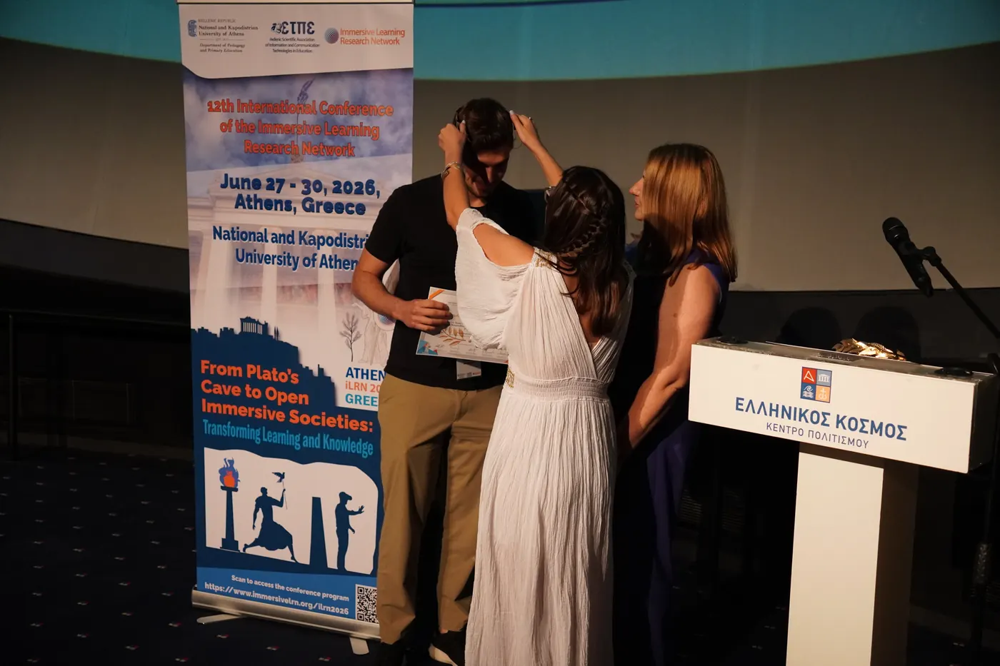
iLRN 2026 award
EEG Cognitive State Machine for User Experimentation and Closed-Loop Neurofeedback in Text-based/AI Interfaces and Puzzle Games
Conference: 12th International Conference of the Immersive Learning Research Network (iLRN 2026)
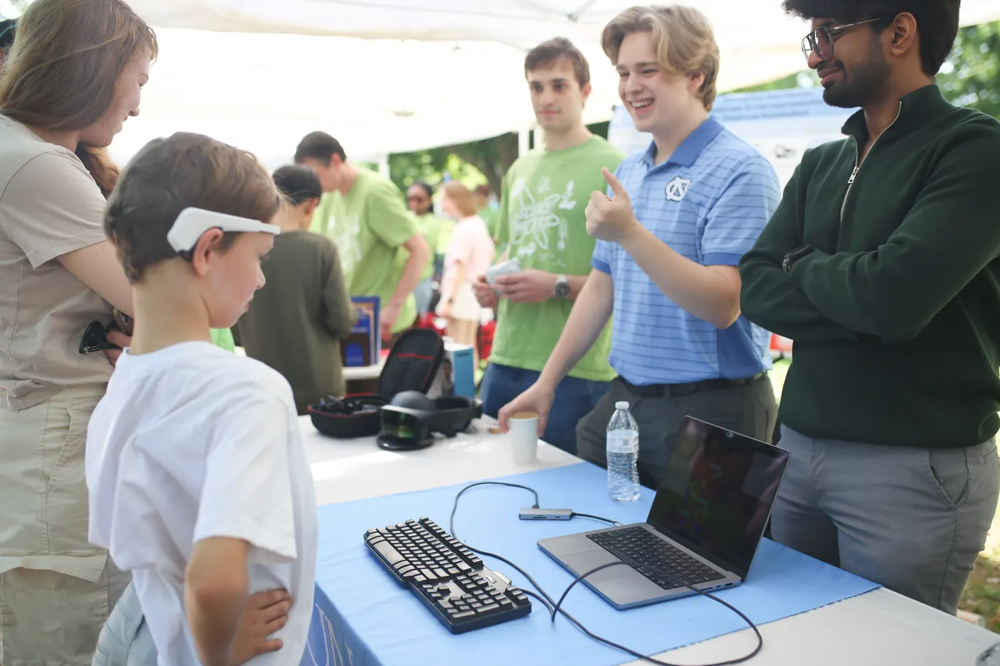
UNC Science Expo Demo
A hands-on demonstration of wearable brain-computer interfaces and neuroadaptive Tetris.
Event: 2026 UNC Science Expo
M.S. Computer Science, UNC Chapel Hill
Lead Researcher (Graduate)
Premedical Post-baccalaureate Program, Columbia University
Neuroscience Lead (Graduate)
B.S. Computer Science and Math, UNC Chapel Hill (Senior)
Student Researcher
B.S. Computer Science, UNC Chapel Hill (Junior)
Student Researcher
B.S. Data Science and Business, UNC Chapel Hill (Sophomore)
Student Researcher
B.S. Computer Science, UNC Chapel Hill (Sophomore)
Student Researcher
B.S. Neuroscience and Statistics, UNC Chapel Hill (Junior)
Student Researcher
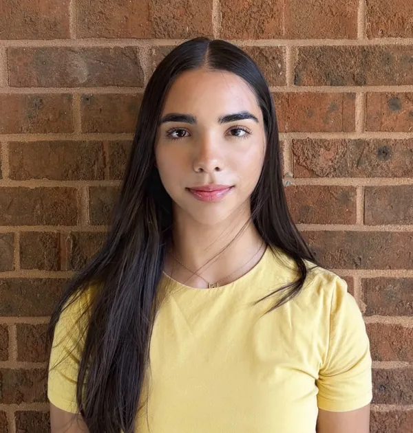
B.S. Computer Science and Neuroscience, UNC Chapel Hill (Freshman)
Student Researcher
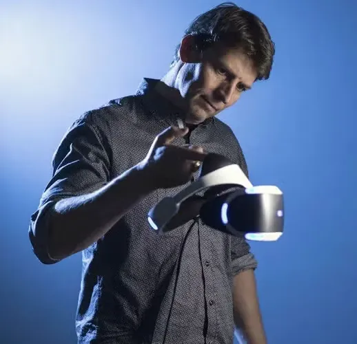
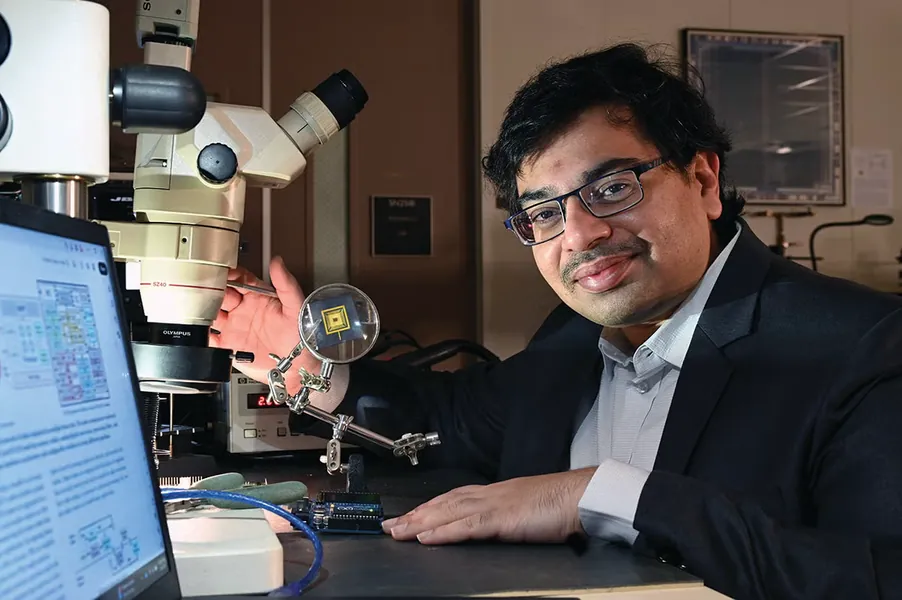
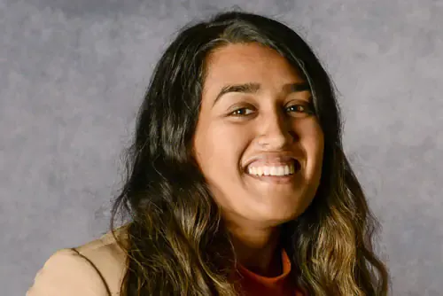
M.S. Computer Science
(currently at IBM)
M.S. Computer Science
M.S. Computer Science